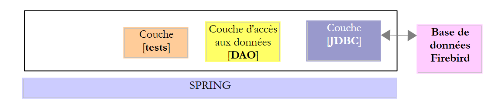
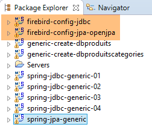
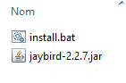
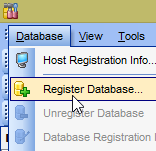
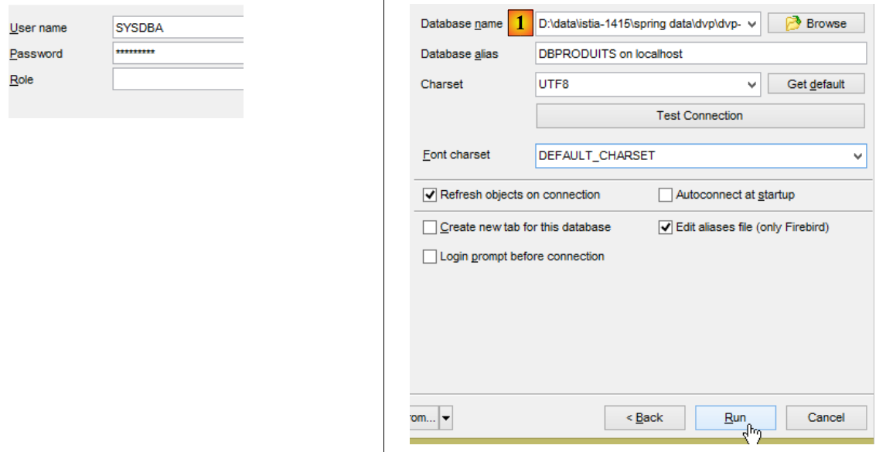
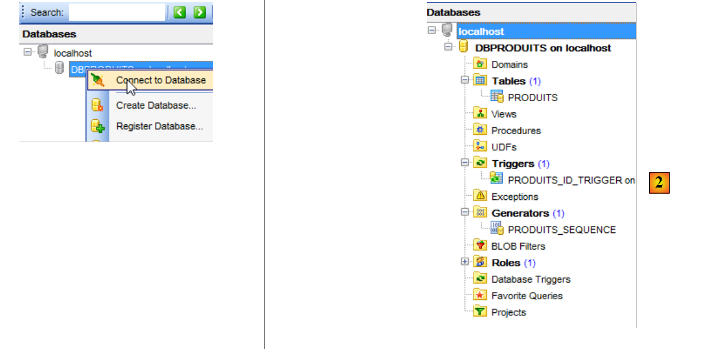
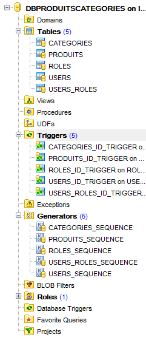
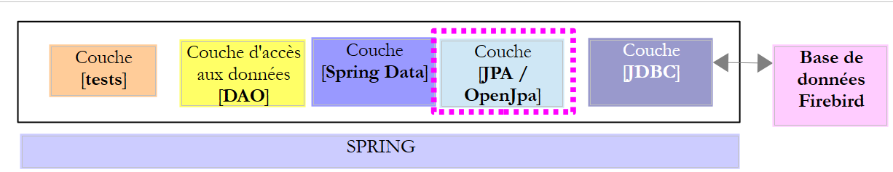
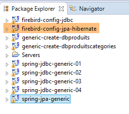
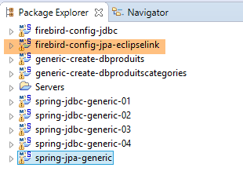

14. Firebird 2.5.4
Vamos agora abordar a portabilidade para o Firebird 2.5.4 do que foi feito com o Oracle.
 |
14.1. Configuração do ambiente de trabalho
14.1.1. Ambiente Eclipse
Iremos trabalhar com o seguinte ambiente Eclipse:
 |
Os projetos Firebird acima referidos podem ser encontrados na pasta [<examples>/spring-database-config\firebird\eclipse].
Nota: Prima [Alt-F5] para regenerar todos os projetos Maven.
14.1.2. Gerar as bases de dados
Tal como fizemos com o Oracle, o DB2 e o SQL Server, teremos de instalar o controlador JDBC do Firebird no repositório local do Maven.
 |
O ficheiro [install.bat] contém o seguinte código:
"%M2_HOME%\bin\mvn.bat" install:install-file -Dfile=jaybird-2.2.7.jar -Dpackaging=jar -DgroupId=org.firebirdsql.jdbc -DartifactId=jaybird -Dversion=2.2.7
onde [%M2-HOME%] é o diretório de instalação do Maven (ver secção 23.2). Após esta instalação, o controlador JDBC do Firebird pode ser referenciado nos ficheiros [pom.xml] utilizando a seguinte dependência:
<dependency>
<groupId>org.firebirdsql.jdbc</groupId>
<artifactId>jaybird</artifactId>
<version>2.2.7</version>
</dependency>
A partir daqui, as ligações às bases de dados Firebird são feitas utilizando as credenciais [sysdba / masterkey]. Inicie o Firebird e o seu cliente [IBManager] (consulte a secção 23.10). As bases de dados Firebird são únicas, na medida em que estão encapsuladas num único ficheiro.
 |  |
 |
- Em [1], o ficheiro pode ser encontrado em [<examples>\spring-database-config\firebird\databases\DBPRODUITS.GDB];
 |
- Tal como no Oracle, as chaves primárias são geradas utilizando sequências.
Procedemos da mesma forma para carregar a base de dados [dbproduitscategories], que se encontra em [<examples>\spring-database-config\firebird\databases\DBPRODUITSCATEGORIES.GDB]
 |
Agora, execute as configurações:
- [spring-jdbc-generic-01.IntroJdbc01];
- [spring-jdbc-generic-01.IntroJdbc02];
- [spring-jdbc-generic-03.JUnitTestDao1];
- [spring-jdbc-generic-03.JUnitTestDao2];
- [spring-jdbc-generic-04.JUnitTestDao];
- [spring-jpa-generic-JUnitTestDao-openjpa];
Todos devem ser aprovados.
14.2. Configurar a camada JDBC
 |  |
O projeto [firebird-config-jdbc] configura a camada [JDBC] da seguinte arquitetura de teste:
 |
O projeto é análogo ao projeto de configuração [oracle-config-jdbc] para a camada JDBC do SGBD MySQL (ver Secção 10.2). Apresentamos apenas as alterações:
O ficheiro [pom.xml] importa o controlador JDBC do Firebird:
<project xmlns="http://maven.apache.org/POM/4.0.0" xmlns:xsi="http://www.w3.org/2001/XMLSchema-instance"
xsi:schemaLocation="http://maven.apache.org/POM/4.0.0 http://maven.apache.org/xsd/maven-4.0.0.xsd">
<modelVersion>4.0.0</modelVersion>
<groupId>dvp.spring.database</groupId>
<artifactId>generic-config-jdbc</artifactId>
<version>0.0.1-SNAPSHOT</version>
<name>configuration generic jdbc</name>
<parent>
<groupId>org.springframework.boot</groupId>
<artifactId>spring-boot-starter-parent</artifactId>
<version>1.2.3.RELEASE</version>
</parent>
<dependencies>
<!-- dépendances variables ********************************************** -->
<!-- driver JDBC from SGBD -->
<dependency>
<groupId>org.firebirdsql.jdbc</groupId>
<artifactId>jaybird</artifactId>
<version>2.2.7</version>
</dependency>
<!-- required for Firebird driver -->
<dependency>
<groupId>javax.resource</groupId>
<artifactId>connector-api</artifactId>
<version>1.5</version>
</dependency>
<dependency>
<groupId>org.antlr</groupId>
<artifactId>antlr-runtime</artifactId>
<version>3.5.2</version>
</dependency>
<!-- dépendances constantes ********************************************** -->
...
</dependencies>
...
</project>
- linhas 18–22: o controlador JDBC do Firebird;
- linhas 24–33: as dependências necessárias para o controlador JDBC do Firebird;
A segunda alteração está na classe [ConfigJdbc], que define as credenciais da base de dados:
// paramètres de connexion
public final static String DRIVER_CLASSNAME = "org.firebirdsql.jdbc.FBDriver";
public final static String URL_DBPRODUITS = "jdbc:firebirdsql:localhost/3050:<exemples>/SPRING-DATABASE-CONFIG/FIREBIRD/DATABASES/DBPRODUITS.GDB";
public final static String USER_DBPRODUITS = "sysdba";
public final static String PASSWD_DBPRODUITS = "masterkey";
public final static String URL_DBPRODUITSCATEGORIES = "jdbc:firebirdsql:localhost/3050:<exemples>/SPRING-DATABASE-CONFIG/FIREBIRD/DATABASES/DBPRODUITSCATEGORIES.GDB";
public final static String USER_DBPRODUITSCATEGORIES = "sysdba";
public final static String PASSWD_DBPRODUITSCATEGORIES = "masterkey";
- Linhas 3 e 6: Deve introduzir os caminhos exatos para ambas as bases de dados;
A terceira modificação que pode ser feita diz respeito ao número máximo de parâmetros que um [PreparedStatement] pode suportar:
// max number of parameters of a [PreparedStatement]
public final static int MAX_PREPAREDSTATEMENT_PARAMETERS = 1000;
O teste [JUnitTestPushTheLimits] gera instruções SQL para 5.000 produtos, o que irá gerar objetos [PreparedStatement] com 5.000 parâmetros. O MySQL suportava este valor. O Firebird não.
A quarta alteração diz respeito a uma palavra reservada no Firebird-config-jdbc: PASSWORD. A coluna [USERS.PASSWORD] foi, portanto, renomeada para [USERS.PASSWD]:
public final static String TAB_USERS_PASSWORD = "PASSWD";
public static final String SELECT_USER_BYLOGIN = "SELECT u.ID as u_ID, u.VERSIONING as u_VERSIONING, u.NAME as u_NAME,u.LOGIN as u_LOGIN,u.PASSWD as u_PASSWORD FROM USERS u WHERE u.LOGIN= :login";
14.3. Configurar a camada JPA do OpenJPA
 |  |
O projeto [firebird-config-jpa-openjpa] configura a camada [JPA] da arquitetura de teste:
 |
Este projeto é semelhante ao projeto de configuração [firebird-config-jpa-openjpa] para a camada JPA do OpenJPA do SGBD Oracle (ver Secção 10.5). Na verdade, ambos os SGBDs utilizam sequências para gerar chaves primárias. Há apenas uma alteração a fazer. Esta encontra-se na definição do bean [jpaVendorAdapter] na classe [ConfigJpa]:
// the provider JPA
@Bean
public JpaVendorAdapter jpaVendorAdapter() {
OpenJpaVendorAdapter openJpaVendorAdapter = new OpenJpaVendorAdapter();
openJpaVendorAdapter.setShowSql(false);
openJpaVendorAdapter.setDatabase(Database.DEFAULT);
openJpaVendorAdapter.setGenerateDdl(true);
return openJpaVendorAdapter;
}
- Linha 6: Indicamos à implementação JPA que irá trabalhar com um SGBD não reconhecido. A implementação JPA adotará então tipos de dados SQL padrão.
Com estas alterações efetuadas, a execução da configuração [spring-jpa-generic-JUnitTestDao-openjpa] deverá ser bem-sucedida.
 |  |
14.4. Configurar a camada JPA do Hibernate
 |  |
Nota: Prima [Alt-F5] para regenerar todos os projetos Maven.
O projeto [firebird-config-jpa-hibernate] é análogo ao projeto [oracle-config-jpa-hibernate] (Secção 10.4), com as mesmas modificações que foram utilizadas para portar o projeto [oracle-config-jpa-openjpa] para o projeto [firebird-config-jpa-openjpa] (Secção 10.4).
Com estas modificações implementadas, a execução da configuração [spring-jpa-generic-JUnitTestDao-hibernate-eclipselink] deverá ser bem-sucedida.
14.5. Configurar a camada JPA do EclipseLink
 |  |
Nota: Prima [Alt-F5] para regenerar todos os projetos Maven.
O projeto [firebird-config-jpa-eclipselink] é análogo ao [oracle-config-jpa-eclipselink] (Secção 10.3), com as mesmas modificações que foram utilizadas para portar o projeto [oracle-config-jpa-openjpa] para o projeto [firebird-config-jpa-openjpa] (Secção 10.4).
Com estas modificações implementadas, a execução da configuração [spring-jpa-generic-JUnitTestDao-hibernate-eclipselink] deverá ser bem-sucedida.